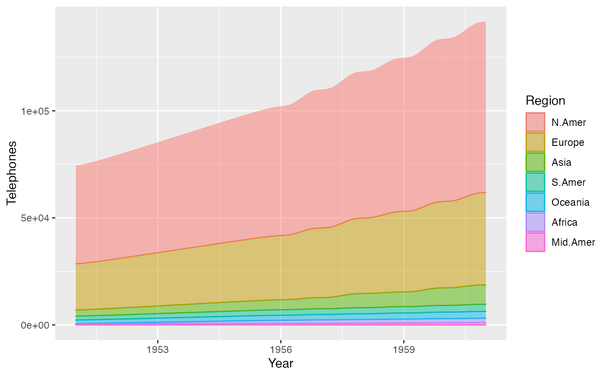
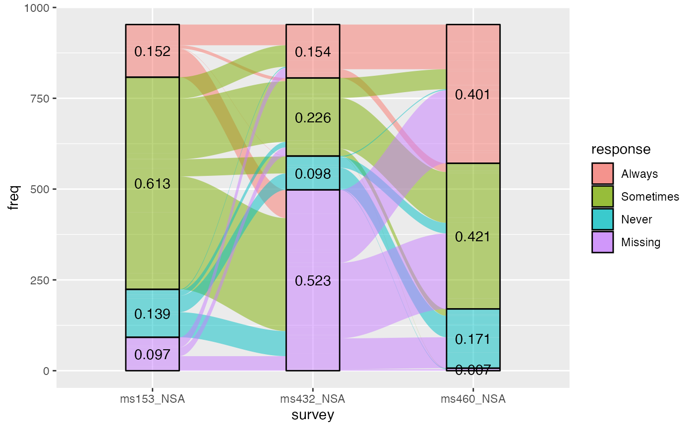
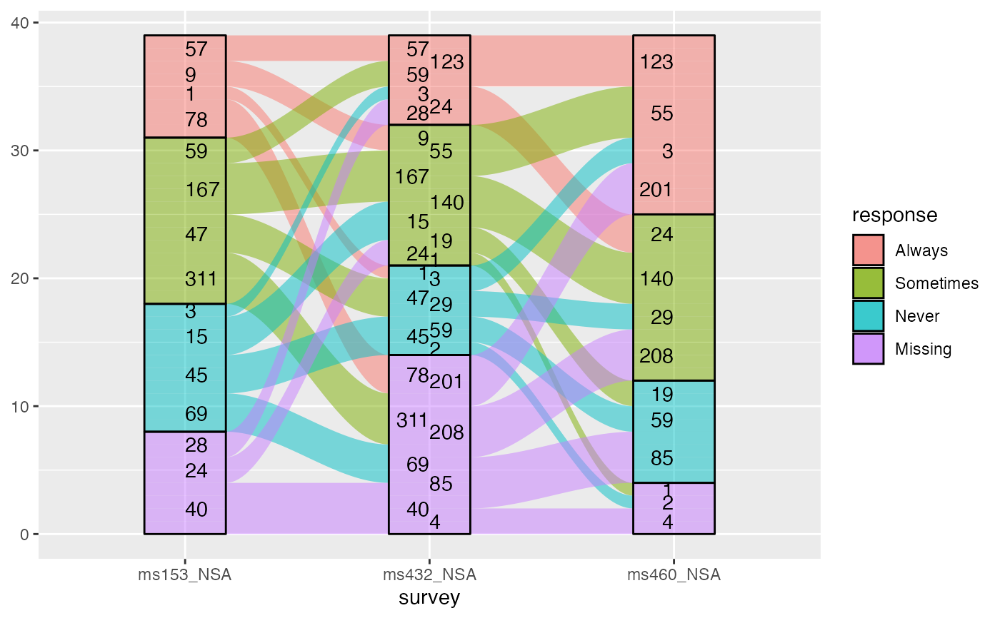
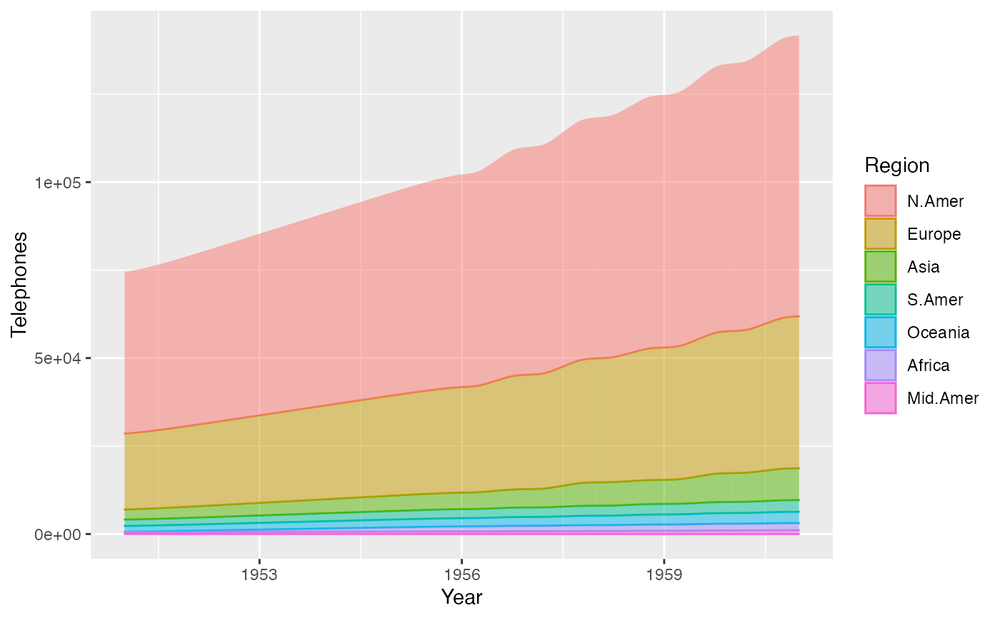
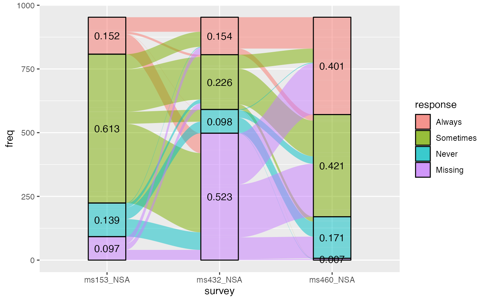
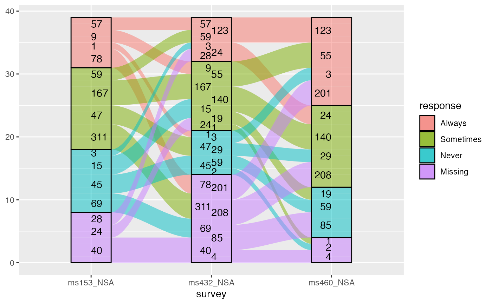

geom_flow receives a dataset of the horizontal (x) and vertical (y,
ymin, ymax) positions of the lodes of an alluvial plot, the
intersections of the alluvia with the strata. It reconfigures these into
alluvial segments connecting pairs of corresponding lodes in adjacent strata
and plots filled x-splines between each such pair, using a provided knot
position parameter knot.pos, and filled rectangles at either end, using a
provided width.
Usage
geom_flow(
mapping = NULL,
data = NULL,
stat = "flow",
position = "identity",
width = 1/3,
knot.pos = 1/4,
knot.prop = TRUE,
curve_type = NULL,
curve_range = NULL,
segments = NULL,
outline.type = "both",
aes.flow = "forward",
na.rm = FALSE,
show.legend = NA,
inherit.aes = TRUE,
...
)
positions_to_flow(
x0,
x1,
ymin0,
ymax0,
ymin1,
ymax1,
kp0,
kp1,
knot.prop,
curve_type,
curve_range,
segments
)Arguments
- mapping
Set of aesthetic mappings created by
aes(). If specified andinherit.aes = TRUE(the default), it is combined with the default mapping at the top level of the plot. You must supplymappingif there is no plot mapping.- data
The data to be displayed in this layer. There are three options:
If
NULL, the default, the data is inherited from the plot data as specified in the call toggplot().A
data.frame, or other object, will override the plot data. All objects will be fortified to produce a data frame. Seefortify()for which variables will be created.A
functionwill be called with a single argument, the plot data. The return value must be adata.frame, and will be used as the layer data. Afunctioncan be created from aformula(e.g.~ head(.x, 10)).- stat
The statistical transformation to use on the data; override the default.
- position
Position adjustment, either as a string naming the adjustment (e.g.
"jitter"to useposition_jitter), or the result of a call to a position adjustment function. Use the latter if you need to change the settings of the adjustment.- width
Numeric; the width of each stratum, as a proportion of the distance between axes. Defaults to 1/3.
- knot.pos
The horizontal distance of x-spline knots from each stratum (
width/2from its axis), either (ifknot.prop = TRUE, the default) as a proportion of the length of the x-spline, i.e. of the gap between adjacent strata, or (ifknot.prop = FALSE) on the scale of thexdirection.- knot.prop
Logical; whether to interpret
knot.posas a proportion of the length of each flow (the default), rather than on thexscale.- curve_type
Character; the type of curve used to produce flows. Defaults to
"xspline"and can be alternatively set to one of"linear","cubic","quintic","sine","arctangent", and"sigmoid"."xspline"produces approximation splines using 4 points per curve; the alternatives produce interpolation splines between points along the graphs of functions of the associated type. See the Curves section.- curve_range
For alternative
curve_types based on asymptotic functions, the value along the asymptote at which to truncate the function to obtain the shape that will be scaled to fit between strata. See the Curves section.- segments
The number of segments to be used in drawing each alternative curve (each curved boundary of each flow). If less than 3, will be silently changed to 3.
- outline.type
Type of outline of each alluvium; one of
"both","lower","upper", and"full".- aes.flow
Character; how inter-lode flows assume aesthetics from lodes. Options are "forward" and "backward".
- na.rm
Logical: if
FALSE, the default,NAlodes are not included; ifTRUE,NAlodes constitute a separate category, plotted in grey (regardless of the color scheme).- show.legend
logical. Should this layer be included in the legends?
NA, the default, includes if any aesthetics are mapped.FALSEnever includes, andTRUEalways includes. It can also be a named logical vector to finely select the aesthetics to display.- inherit.aes
If
FALSE, overrides the default aesthetics, rather than combining with them. This is most useful for helper functions that define both data and aesthetics and shouldn't inherit behaviour from the default plot specification, e.g.borders().- ...
Additional arguments passed to
ggplot2::layer().- x0, x1, ymin0, ymax0, ymin1, ymax1, kp0, kp1
Numeric corner and knot position data for the ribbon of a single flow.
Details
The helper function positions_to_flow() takes the corner and knot positions
and curve parameters for a single flow as input and returns a data frame of
x, y, and shape used by grid::xsplineGrob() to render the flow.
Aesthetics
geom_alluvium, geom_flow, geom_lode, and geom_stratum understand the
following aesthetics (required aesthetics are in bold):
xyyminymaxalphacolourfilllinetypesizegroup
group is used internally; arguments are ignored.
Alluvium, flow, and lode geoms default to alpha = 0.5. Learn more about
setting these aesthetics in vignette("ggplot2-specs", package = "ggplot2").
Curves
By default, geom_alluvium() and geom_flow() render flows between lodes as
filled regions between parallel x-splines. These graphical elements,
generated using grid::xsplineGrob(), are
parameterized by the relative location of the knot (knot.pos). They are
quick to render and clear to read, but users may prefer plots that use
differently-shaped ribbons.
A variety of such options are documented at, e.g., this easing functions cheat sheet and this blog post by Jeffrey Shaffer. Easing functions are
not (yet) used in ggalluvial, but several alternative curves are available.
Each is encoded as a continuous, increasing, bijective function from the unit
interval \([0,1]\) to itself, and each is rescaled so that its endpoints
meet the corresponding lodes. They are rendered piecewise-linearly, by
default using segments = 48. Summon each curve type by passing one of the
following strings to curve_type:
"linear": \(f(x)=x\), the unique degree-1 polynomial that takes 0 to 0 and 1 to 1"cubic": \(f(x)=3x^{2}-2x^{3}\), the unique degree-3 polynomial that also is flat at both endpoints"quintic": \(f(x)=10x^{3}-15x^{4}+6x^{5}\), the unique degree-5 polynomial that also has zero curvature at both endpoints"sine": the unique sinusoidal function that is flat at both endpoints"arctangent": the inverse tangent function, scaled and re-centered to the unit interval from the interval centered at zero with radiuscurve_range"sigmoid": the sigmoid function, scaled and re-centered to the unit interval from the interval centered at zero with radiuscurve_range
Only the (default) "xspline" option uses the knot.* parameters, while
only the alternative curves use the segments parameter, and only
"arctangent" and "sigmoid" use the curve_range parameter. (Both are
ignored if not needed.) Larger values of curve_range result in greater
compression and steeper slopes. The NULL default will be changed to
2+sqrt(3) for "arctangent" and to 6 for "sigmoid".
These package-specific options set global values for curve_type,
curve_range, and segments that will be defaulted to when not manually
set:
ggalluvial.curve_type: defaults to"xspline".ggalluvial.curve_range: defaults toNA, which triggers the curve-specific default values.ggalluvial.segments: defaults to48L.
See base::options() for how to use options.
Defunct parameters
The previously defunct parameters axis_width and ribbon_bend have been
discontinued. Use width and knot.pos instead.
See also
ggplot2::layer() for additional arguments and
stat_alluvium() and
stat_flow() for the corresponding stats.
Other alluvial geom layers:
geom_alluvium(),
geom_lode(),
geom_stratum()
Examples
# use of strata and labels
ggplot(as.data.frame(Titanic),
aes(y = Freq,
axis1 = Class, axis2 = Sex, axis3 = Age)) +
geom_flow() +
scale_x_discrete(limits = c("Class", "Sex", "Age")) +
geom_stratum() +
geom_text(stat = "stratum", aes(label = after_stat(stratum))) +
ggtitle("Alluvial plot of Titanic passenger demographic data")
 # use of facets, with quintic flows
ggplot(as.data.frame(Titanic),
aes(y = Freq,
axis1 = Class, axis2 = Sex)) +
geom_flow(aes(fill = Age), width = .4, curve_type = "quintic") +
geom_stratum(width = .4) +
geom_text(stat = "stratum", aes(label = after_stat(stratum)), size = 3) +
scale_x_discrete(limits = c("Class", "Sex")) +
facet_wrap(~ Survived, scales = "fixed")
# use of facets, with quintic flows
ggplot(as.data.frame(Titanic),
aes(y = Freq,
axis1 = Class, axis2 = Sex)) +
geom_flow(aes(fill = Age), width = .4, curve_type = "quintic") +
geom_stratum(width = .4) +
geom_text(stat = "stratum", aes(label = after_stat(stratum)), size = 3) +
scale_x_discrete(limits = c("Class", "Sex")) +
facet_wrap(~ Survived, scales = "fixed")
 # time series alluvia of WorldPhones data
wph <- as.data.frame(as.table(WorldPhones))
names(wph) <- c("Year", "Region", "Telephones")
ggplot(wph,
aes(x = Year, alluvium = Region, y = Telephones)) +
geom_flow(aes(fill = Region, colour = Region),
width = 0, outline.type = "full")
# time series alluvia of WorldPhones data
wph <- as.data.frame(as.table(WorldPhones))
names(wph) <- c("Year", "Region", "Telephones")
ggplot(wph,
aes(x = Year, alluvium = Region, y = Telephones)) +
geom_flow(aes(fill = Region, colour = Region),
width = 0, outline.type = "full")
 # treat 'Year' as a number rather than as a factor
wph$Year <- as.integer(as.character(wph$Year))
ggplot(wph,
aes(x = Year, alluvium = Region, y = Telephones)) +
geom_flow(aes(fill = Region, colour = Region),
width = 0, outline.type = "upper")
# treat 'Year' as a number rather than as a factor
wph$Year <- as.integer(as.character(wph$Year))
ggplot(wph,
aes(x = Year, alluvium = Region, y = Telephones)) +
geom_flow(aes(fill = Region, colour = Region),
width = 0, outline.type = "upper")
 # hold the knot positions fixed
ggplot(wph,
aes(x = Year, alluvium = Region, y = Telephones)) +
geom_flow(aes(fill = Region, colour = Region),
width = 0, outline.type = "lower", knot.prop = FALSE)

# \donttest{
# rightward flow aesthetics for vaccine survey data, with cubic flows
data(vaccinations)
vaccinations$response <- factor(vaccinations$response,
rev(levels(vaccinations$response)))
# annotate with proportional counts
ggplot(vaccinations,
aes(x = survey, stratum = response, alluvium = subject,
y = freq, fill = response)) +
geom_lode() + geom_flow(curve_type = "cubic") +
geom_stratum(alpha = 0) +
geom_text(stat = "stratum", aes(label = round(after_stat(prop), 3)))

# annotate fixed-width ribbons with counts
ggplot(vaccinations,
aes(x = survey, stratum = response, alluvium = subject,
weight = freq, fill = response)) +
geom_lode() + geom_flow(curve_type = "cubic") +
geom_stratum(alpha = 0) +
geom_text(stat = "flow",
aes(label = after_stat(n),
hjust = (after_stat(flow) == "to")))

# }
# hold the knot positions fixed
ggplot(wph,
aes(x = Year, alluvium = Region, y = Telephones)) +
geom_flow(aes(fill = Region, colour = Region),
width = 0, outline.type = "lower", knot.prop = FALSE)

# \donttest{
# rightward flow aesthetics for vaccine survey data, with cubic flows
data(vaccinations)
vaccinations$response <- factor(vaccinations$response,
rev(levels(vaccinations$response)))
# annotate with proportional counts
ggplot(vaccinations,
aes(x = survey, stratum = response, alluvium = subject,
y = freq, fill = response)) +
geom_lode() + geom_flow(curve_type = "cubic") +
geom_stratum(alpha = 0) +
geom_text(stat = "stratum", aes(label = round(after_stat(prop), 3)))

# annotate fixed-width ribbons with counts
ggplot(vaccinations,
aes(x = survey, stratum = response, alluvium = subject,
weight = freq, fill = response)) +
geom_lode() + geom_flow(curve_type = "cubic") +
geom_stratum(alpha = 0) +
geom_text(stat = "flow",
aes(label = after_stat(n),
hjust = (after_stat(flow) == "to")))

# }